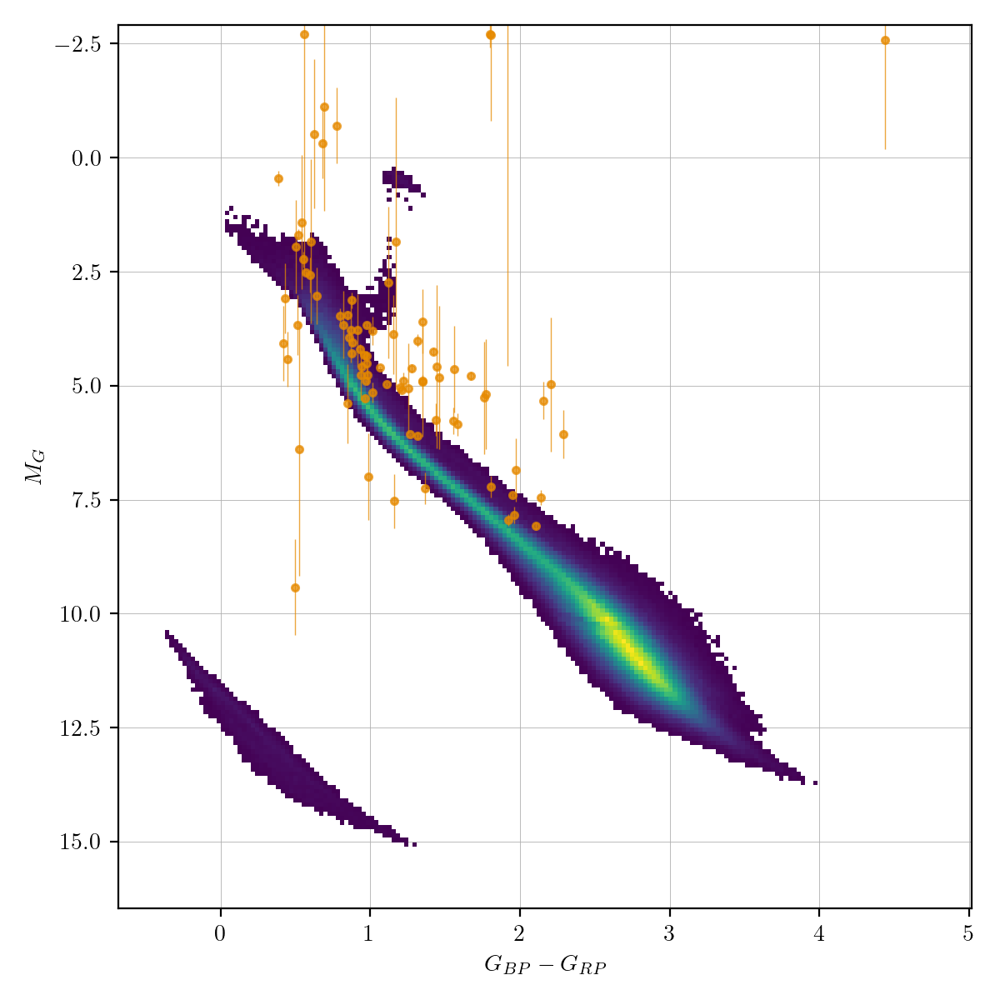

Variable stars (vnv)¶
Variable stars are objects whose brightness is varying at a statistically significant level. ZTF has statistical measurements depend on magnitude: down to ~10 millimagnitudes for bright stars and >0.1 mag for objects near the detection limit. Many astrophysical objects exhibit variable behavior, including periodic variables such as eclipsing binaries, pulsators, etc, and non-periodic variables such as AGN and YSOs.
Classification and numbers¶
Subtypes
Irregular
Flaring
Periodic
Dipping
Long Time Scale
ZTF light curves¶

Description¶
Most stars are likely to be variable at some level. Therefore, variable is defined to be those varying at a statistically varying level, with millimagnitude to magnitude level variations.
Light curve characteristics¶
amplitude: varies from survey precision to more than a magnitude


References and further reading:¶
Jayasinghe et al., 2018, MNRAS 447 3, The ASAS-SN catalogue of variable stars I: The Serendipitous Survey arxiv:1803.01001